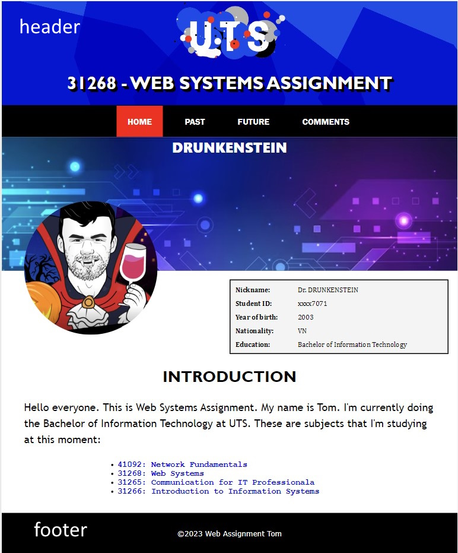

My website has 4 webpages and 1 cascading stylesheet. The table below provides an overall outline of structure of my website.
| FILENAME | TITLE | EXTENSION | DESCRIPTION |
|---|---|---|---|
| index.html | HOME | .html | The Homepage of my websites |
| past.html | MY PAST | .html | Description of my past education. |
| future.html | MY FUTURE | .html | Description of my future plans & careers. |
| comments.html | COMMENTS | .html | This page contains some comments & description to explain how I worked on this website. |
| websystems.css | N/A | .css | The stylesheet that controls the aesthetics of my website. |
The second part is about structure of HTML and CSS files. In terms of HTML, all the webpages are basically in the similar structure, so Home Page is used to provide explanation of its breakdown structure. When it comes to CSS file, the description/explanation of selectors is provided below.
<!DOCTYPE html>: This declaration defines the document type and version of HTML being used.<html lang="en">: The opening and closing <html> tags indicate the beginning and end of an HTML document. The lang attribute specifies the language of the document (in this case, English).<head>: The <head> element contains meta-information about the document, such as character encoding, viewport settings, compatibility mode, and external resources (like CSS). It also contains the <title> element which provides the title of the document, shown in the browser's title bar or tab.<body>: The <body> element contains the actual content of the document, including headings, paragraphs, images, links, and other elements. In this document, the content is divided into three main sections: header, main, and footer.<header>: The <header> element usually contains the site's logo, title, and main navigation. In this document, it has an overlay div, an image (UTS logo), a heading (assignment title), and a navigation bar with links to different pages.<div id="container">: This <div> element represents the main content area of the page. It has a heading ("PROFILE") and a nested <div> with the class "profile-info" that contains an image (profile picture) and other information about the user in a table format.<div class="Introduction">: Another <div> element that contains an introduction section with a table of user information, an introduction paragraph, and a list of subjects the user is studying.<footer>: The <footer> element typically contains copyright information, contact information, or other supplementary information about the page. In this document, the footer contains a copyright statement.The HTML document also makes use of classes (e.g., .header and .footer) to apply styles and organize the structure. These classes are referenced in the external CSS file ("websystems.css") linked in the <head> section.
*: This is a universal selector that targets all elements on the page. In this case, it sets the box-sizing property to border-box, which ensures that an element's total width and height include its padding and border.body: This selector targets the body element of the page and sets the margin to 0.header: This selector targets the header element of the page and sets its margin, width, background image, background position, and size.#overlay, #Page: These are ID selectors targeting elements with respective IDs. The former targets an element with the ID 'overlay' and sets its position, padding, box-sizing, display, align-items, and margin. The latter targets an element with the ID 'Page' and sets its left and right margin, position, color, font-size, font-weight, text-shadow, transform, perspective, text-align, text-transform, and font-family.img main: This selector targets the 'main' element inside an 'img' element and sets its float and margin-right properties.table, footer, nav: These selectors target table, footer, and nav elements, respectively. They set various properties like border-collapse, text-indent, border-spacing, text-align, font-family, display, and background-color..HomeLink li, .HomeLink li a, .HomeLink li a:hover, .HomeLink li a:active: These are class and descendant selectors that target 'li' elements inside an element with the class 'HomeLink'. They set various properties like display, margin, padding, font-size, font-family, color, text-decoration, padding, and transition. The ':hover' and ':active' pseudo-classes target the link when it is hovered over and clicked, respectively..HomePage li:first-child a, .PastPage li:nth-child(2) a, .FuturePage li:nth-child(3) a, .CommentPage li:nth-child(4) a: These selectors use a combination of class selectors and pseudo-classes to target specific child elements inside elements with the specified classes. They set the background-color property for each target.a, .profile, table.info, td strong, .container, .profile-info, .profile-info .profile-pic, .profile-info .profile-pic img, .profile-info .info, .profile-info .info li, .Introduction, .introduction, .intro-paragraph, .subjects: These selectors target various elements with specific tags or classes and set numerous properties for styling..Experience, .Experience h2.edu, .Experience section, .Experience h3, .Experience .date, .Experience ul, .Institution, .LHP_degree li, .HCMUT li, .UTS li, .PastContainer, .Institution:before, .timeline, .timeline-content, .timeline-content:last-child, .date, .timeline-content .date, .ExperienceContainer, .FutureContainer, .PlanContainer, .Plan, .PlanContent, .PlanImage, .PlanText, .PlanImage img, .Path, .CareerIntro, .network, .net-overview, .CareerPlan, .IT-Path, .CareerPlan p.it-description: These selectors are a mix of class, tag, and pseudo-class selectors that target various elements within the web page and apply a wide range of styles to them.Generally, this website's aesthetic is designed to provide users with a visually appealing and intuitive experience. The layout showcases a harmonious blend of colors, typography, and imagery, while also maintaining a professional and organized appearance. The use of background images, carefully chosen fonts, and smooth transitions creates an immersive atmosphere that invites users to explore the website's content. The aim is to evoke a sense of sophistication, modernity, and approachability, allowing users to perceive my webpages as both informative and engaging. The aspects of my Webpage's aesthetics are provided below.
First, the website seems to have a responsive design with media queries that adjust the layout and font sizes based on the screen size. This is important for accessibility because it allows the website to be viewed on different devices with varying screen sizes (max width: under 600px; 600px to 868px and 868px to 1024px)
Image 1: Mobile view of the website
Image 2: Tablet view of the website

Image 3: Desktop view of the website
The second factor is the use of alt attributes on images. Alt attributes provide a description of the image content for screen readers, which is important for users who are visually impaired and rely on these tools to understand the content of the website.
The third factor is the contrast between the background color and text color. Good contrast is important for readability, particularly for users with visual impairments.

The final factor is the use of tabindex can improve the accessibility of a website for users who have difficulty using a mouse or other pointing device, by providing a logical and intuitive order for keyboard navigation.